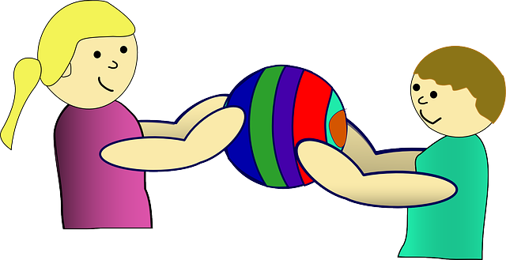

4.5.- Modificadores de contenido (II): atributos estáticos

Cada vez que se produce una instancia de una clase (es decir, cada vez que se crea un objeto de esa clase), se desencadenan una serie de procesos (construcción del objeto) que dan lugar a la reserva en memoria de un espacio físico que alojará al objeto creado (los bytes que ocupan sus atributos) así como a la asignación de valores iniciales a esos atributos. De esta manera cada objeto tendrá sus propios miembros a imagen y semejanza de la plantilla propuesta por la clase.
En el caso de nuestra clase Vehiculo, cada vez que se instancie un objeto vehículo se ejecutará un mecanismo automático (construcción del objeto) que reservará espacio para cada uno de sus atributos (ocho bytes para el la capacidad del depósito, que es de tipo double; un byte para el estado del motor, que es de tipo boolean, etc.).
Supongamos ahora que nos ha pedido añadir un nuevo atributo a la clase que representa el número de vehículos que han sido creados hasta el momento. Podríamos llamarlo, por ejemplo, vehiculosCreados y podría ser de tipo entero (por ejemplo short). Ese atributo se incrementará en uno cada vez que se construya un nuevo vehículo. Si te fijas, ese valor será siempre el mismo para cualquier vehículo, pues en realidad no es una característica específica de cada vehículo en particular, sino una característica de todos los vehículos en general. Es decir, podríamos hablar de una característica de la propia clase más que de una característica de cada objeto. Este tipo de de atributos son conocidos con el nombre de atributos estáticos o atributos de clase, o variables de clase.
Un atributo estático o de clase es común (el mismo) para todos los objetos de una misma clase. Podría decirse que la existencia del atributo no depende de la existencia de ningún objeto en particular, sino de la propia clase, y por tanto sólo habrá uno, independientemente del número de objetos que se creen, incluso aunque no exista aún ningún objeto. El atributo será siempre el mismo para todos los objetos y tendrá un valor único independientemente de cada objeto. Aunque no exista ningún objeto de esa clase, ése atributo sí existirá y contendrá un valor (pues se trata de un atributo de la clase más que del objeto). Por ejemplo, podríamos estar al inicio de un programa que utiliza vehículos pero sin haber creado todavía ninguno y aún así el atributo vehiculosCreados ya tendría un valor (valor cero). Puedo querer preguntar por el número de vehículos que se han creado, y asegurar que obtendré una respuesta al consultar ese atributo, aunque el número sea cero porque todavía no se ha creado ninguno.
![Estructura de una clase Java: detalle de los atributos. La clase Ejemplo tiene un atributo 1 y un atributo 2, siendo éste último static, por lo que su valor está "guardado en la clase". Se crean dos instancias de la la clase Ejemplo, ej1 y ej2, cada una de las cuales tiene dos atributos, atributo 1 con su valor guardado en el objeto, y atributo 2, que lo único que hay en el objeto es una referencia que apunta al valor guardado para ese atributo 2 en la clase, por ser static. Se indica también que el atributo 2 existe y tiene valor, independientemente de que existan o no instancias de la clase.](AtributosEstaticos.png "Atributos estáticos")
Para indicar que un atributo es estático o de clase Java proporciona el modificador de contenido static.
En el caso de nuestro atributo vehiculosCreados para la clase Vehiculo simplemente habría que colocar delante el modificador static:
public class Vehiculo {
private static short vehiculosCreados; // Cantidad de vehículos creados hasta el momento
...
...
}De esta manera acabamos de añadir un atributo común (el mismo) para todos los objetos de una misma clase. Gracias al modificador static no se creará un atributo vehiculosCreados de tipo short cada vez que se instancie un objeto Vehiculo, sino que ese atributo existirá desde antes de la creación de ningún objeto (será una atributo de clase y no de instancia) y será compartido por todos los objetos Vehiculo que se vayan creando en tu programa.
Ejercicio resuelto

Continuando con nuestro proyecto de clase para modelar vehículos, se ha considerado añadir los siguientes nuevos atributos:
- número de vehículos que se han creado hasta el momento;
- consumo medio del vehículo (en litros por cada 100 kilómetros);
- cantidad de kilómetros totales realizados por todos los vehículos;
- número de vehículos con el motor encendido en el momento actual;
- nivel del depósito de combustible en el vehículo (en litros).
Lleva a cabo un análisis para cada uno de esos nuevos atributos en el que tendrás que decidir:
- un identificador (nombre del atributo). Habrá que elegir un nombre representativo de la información que almacena;
- un tipo: entero, real, texto, etc., y la elección de un tipo Java apropiado;
- una visibilidad. Si va a ser visible desde cualquier clase, sólo desde el paquete o sólo desde la clase (modificador de acceso);
- mutabilidad. Si va a ser constante durante toda la vida del objeto (modificador
final) o podría cambiar con el tiempo.
Esto ya lo has hecho para otros atributos en anteriores ejercicios, pero ahora además también tendrás que decidir para cada uno si es más conveniente que sea un atributo de objeto (cada vehículo tendrá esa característica con un valor concreto) o un atributo de clase (esa característica será común y con el mismo valor para cualquier objeto, es decir, será una característica de la clase y no de cada objeto en particular). Por tanto tendrás que incluir en tu análisis un quinto criterio a considerar: ¿atributo de objeto o atributo de clase?
Una vez realizado ese análisis, confecciona un tabla para representar estos nuevos atributos en la que incluyas una columna adicional que indique, además de todo lo que hemos visto anteriormente (nombre, tipo, visibilidad, mutabilidad), si el atributo va a ser de objeto o de clase.
A partir de la tabla anterior escribe la clase Java que representa a un vehículo incluyendo todos los atributos que hemos visto hasta el momento (los del ejercicio anterior más los de este ejercicio).